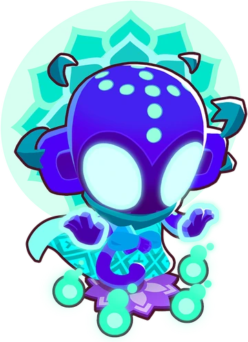

Geraldo é um herói poderoso no jogo "Bloons TD 6". Use suas habilidades únicas, como "Lâmina Flamejante"
e
"Fúria de Fogo", de forma estratégica para derrotar os balões. Posicione-o em locais estratégicos para
maximizar seu impacto e atualize suas habilidades conforme ele ganha experiência. Experimente diferentes
combinações de torres e heróis para encontrar a melhor estratégia para o seu estilo de jogo.
Gwendolin
A Gwendolin, uma das heroínas disponíveis no "Bloons TD 6", é uma poderosa lançadora de fogo que traz
habilidades únicas para o campo de batalha. Equipada com um lança-chamas e habilidades de fogo, ela pode
atacar os balões com chamas devastadoras, causando danos significativos. Além disso, suas habilidades
incluem o "Foguete de Pináculo", que lança um foguete explosivo em uma área, e o "Ataque de Fogo", que
aumenta a velocidade de ataque e dano de Gwendolin. Posicioná-la estrategicamente em pontos-chave do
mapa
pode maximizar seu impacto, ajudando a deter as hordas de balões invasores. Ao ganhar experiência, suas
habilidades podem ser aprimoradas para aumentar ainda mais sua eficácia no combate contra os balões
inimigos. Use suas habilidades especiais com sabedoria para superar desafios e alcançar a vitória.
Ezili
Ezili é uma das heroínas disponíveis no jogo "Bloons TD 6". Ela é uma poderosa feiticeira com
habilidades únicas voltadas para debilitar e enfraquecer os balões inimigos. A principal habilidade de
Ezili é a "Maldição Necromante", que enfraquece os balões e até mesmo os transforma em balões mais
fracos quando derrotados. Além disso, ela possui habilidades especiais como "Maldição da Alma", que
causa dano contínuo aos balões próximos, e "Vodu", que permite controlar balões específicos e fazê-los
explodir. Ezili é uma excelente escolha para jogadores que desejam enfraquecer os balões inimigos ao
longo do caminho, tornando-os mais fáceis de serem derrotados por outras torres de defesa.
Capitão Churchill
O Capitão Churchill é um herói poderoso em Bloons TD 6, especializado em ataques de longo alcance e dano
em área. Com sua artilharia avançada, ele pode eliminar grandes quantidades de balões inimigos
rapidamente. Suas habilidades incluem o "Canhão Naval", que dispara projéteis explosivos capazes de
causar danos significativos a grupos de balões, e o "Aprimoramento Tático", que aumenta o poder de
ataque de torres próximas. Além disso, seu ataque especial "MOAB Barrage" é extremamente eficaz contra
balões de grande porte, como os MOABs (Mother of All Balloons). O Capitão Churchill é uma escolha
excelente para jogadores que buscam um herói capaz de lidar com hordas de balões com eficiência e
precisão, especialmente em estágios avançados do jogo.
Benjamin
O Benjamin é um herói único em Bloons TD 6, conhecido por suas habilidades financeiras e estratégicas.
Ao contrário de outros heróis que se concentram principalmente em combate, Benjamin traz vantagens
econômicas para o jogo. Sua habilidade especial, "Injeção de Dinheiro", gera uma renda extra ao longo do
tempo, fornecendo recursos adicionais para construir mais torres e fortalecer a defesa. Além disso, ele
pode desativar balões temporariamente com sua habilidade "Hackeamento", dando aos jogadores um tempo
crucial para reforçar suas defesas. Embora não seja um combatente direto, Benjamin é essencial para
estabelecer uma base econômica sólida e manter o equilíbrio financeiro durante as partidas, tornando-o
uma escolha estratégica para jogadores que valorizam o gerenciamento de recursos.
Quincy
Quincy é um dos heróis disponíveis no jogo Bloons TD 6, conhecido por sua habilidade excepcional com o
arco e flecha. Sendo o primeiro herói desbloqueado no jogo, Quincy é uma escolha popular para muitos
jogadores. Sua habilidade principal, "Flechas Rápidas", permite que ele atire uma série de flechas com
rapidez, causando danos aos balões inimigos. Além disso, ele possui habilidades especiais como "Chuva de
Flechas", que causa danos em uma área maior, e "Atração de Flechas", que aumenta sua precisão e
velocidade de tiro. Com sua versatilidade e capacidade de causar danos significativos aos balões
inimigos, Quincy é uma adição valiosa a qualquer estratégia de defesa.
Corvus
Corvus, um dos heróis disponíveis no Bloons TD 6, é um poderoso druida capaz de manipular a magia da
natureza para derrotar os balões invasores. Sua habilidade principal, "Tornado de Espinhos", cria uma
tempestade de espinhos que danifica os balões ao longo do caminho. Além disso, ele pode convocar animais
da floresta para ajudar na batalha, como ursos e lobos, com sua habilidade "Fúria da Natureza". Corvus
também é capaz de lançar feitiços de cura com sua habilidade "Regeneração", mantendo as defesas
fortalecidas durante os momentos críticos. Com sua magia natural e habilidades de suporte, Corvus é uma
escolha estratégica para os jogadores que buscam uma defesa robusta contra os balões..
Adora
Adora, uma das heroínas disponíveis no Bloons TD 6, é uma divindade poderosa capaz de lançar feitiços
devastadores contra os balões inimigos. Seu ataque principal é uma rajada de energia divina que causa
danos significativos aos balões próximos. Além disso, ela possui habilidades especiais, como "Sacrifício
Divino", que aumenta temporariamente seu poder de ataque ao se sacrificar por um curto período. Adora
também pode convocar um avatar divino para combater os balões diretamente com sua habilidade "Avatar de
Vingança". Com sua aura divina e poder destrutivo, Adora é uma escolha formidável para os jogadores que
buscam uma força divina para defender contra as hordas de balões invasores.
Pat
Pat Fusty, um dos heróis disponíveis no Bloons TD 6, é um gorila gigante com uma força incrível e
habilidades únicas para combater os balões invasores. Ele utiliza seus punhos poderosos para esmagar os
balões mais próximos, causando danos consideráveis em uma área ampla. Além disso, sua habilidade
especial, "Soco de Vento", permite que ele golpeie os balões com uma força tremenda, lançando-os para
longe e causando danos adicionais. Com sua resistência e capacidade de causar estragos nos balões, Pat
Fusty é uma escolha valiosa para os jogadores que procuram um herói robusto e eficaz na batalha contra
as hordas de balões.
Obyn Greenfoot
Obyn Greenfoot é um dos heróis disponíveis no Bloons TD 6, conhecido por sua conexão com a natureza e
suas habilidades místicas. Ele conjura totems mágicos que lançam espinhos afiados nos balões inimigos,
causando danos significativos. Além disso, Obyn tem a capacidade única de fortalecer as torres próximas,
aumentando seu alcance e poder de ataque. Sua habilidade especial, "Furacão de Espinhos", cria uma
tempestade de espinhos que danifica e retarda os balões em uma grande área. Com suas habilidades
naturais e mágicas, Obyn Greenfoot é uma adição valiosa à equipe de defesa contra os balões invasores.

Psi
Psi é um dos heróis disponíveis no Bloons TD 6, destacando-se por suas habilidades psíquicas poderosas.
Ele ataca os balões inimigos com rajadas de energia mental, causando danos significativos. Além disso,
Psi tem a habilidade de manipular a mente dos balões, fazendo com que eles ataquem uns aos outros por um
curto período. Sua habilidade especial, "Campo de Energia", cria uma barreira defensiva que protege as
torres próximas e reflete os projéteis inimigos de volta para os balões. Com suas habilidades psíquicas
únicas, Psi é uma escolha estratégica para deter as hordas de balões invasores.
Etiene
Etiene é um dos heróis disponíveis no Bloons TD 6, conhecido por sua habilidade de lançar lâminas de energia. Ela ataca os balões inimigos com suas lâminas, causando danos consideráveis e cortando através de múltiplos balões de uma só vez. Sua habilidade especial, "Lâminas da Tempestade", cria uma tempestade de lâminas que ataca os balões em uma área ampla, causando danos massivos. Além disso, Etiene pode teleportar-se instantaneamente para diferentes partes do mapa, permitindo uma rápida resposta aos ataques inimigos. Com sua agilidade e habilidades ofensivas, Etiene é uma adição valiosa para qualquer estratégia de defesa contra os balões.